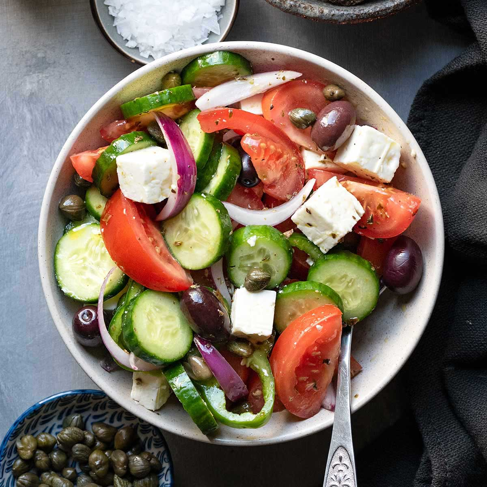

Greek Salad

Greek Salad, also known as Horiatiki Salad, is a refreshing and flavorful dish featuring crisp vegetables, olives, and feta cheese. Here's a simple recipe for a classic Greek Salad:
Ingredients:
- 4 medium-sized tomatoes, diced
- 1 cucumber, diced
- 1 red onion, thinly sliced
- 1 green bell pepper, diced
- 1 cup Kalamata olives, pitted
- 200g feta cheese, crumbled
- 1 teaspoon dried oregano
- Extra virgin olive oil, for drizzling
- Red wine vinegar, to taste
- Salt and black pepper, to taste
Instructions:
- Combine the diced tomatoes, cucumber, sliced red onion, diced green bell pepper, and Kalamata olives in a large bowl.
- Sprinkle crumbled feta cheese over the vegetables.
- Drizzle extra virgin olive oil over the salad.
- Sprinkle dried oregano on top.
- Season with salt and black pepper to taste.
- Drizzle with red wine vinegar to your liking.
- Gently toss the salad to combine all the ingredients.
- Chill in the refrigerator for about 30 minutes before serving to enhance the flavors.
- Serve the Greek Salad chilled and enjoy!
This Greek Salad is a perfect side dish or a light meal on its own. Enjoy the vibrant flavors of the Mediterranean!